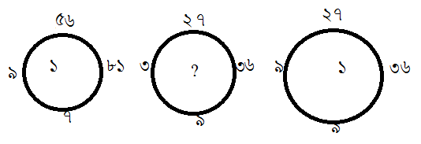

37th BCS Preliminary Question
১। কোনটি বাগধারা বোঝায় ?
(ক) চৈত্র সংক্রান্তি
(খ) পৌষ সংক্রান্তি
(গ) শিরে সংক্রান্তি
(ঘ) শিব সংক্রান্তি
২। কোনটি মৌলিক শব্দ ?
(ক) মানব
(খ)গোলাপ
(গ)একাঙ্ক
(ঘ)ধাতব
৩। বাংলা সাহিত্যের ইতিহাস বিষয়ক গ্রন্থসমূহের মধ্যে কোনটি ডঃ মুহম্মদ শহীদুল্লাহর লেখা ?
(ক)বঙ্গভাষা ও সাহিত্য
(খ)বাঙ্গালা সাহিত্যের ইতিহাস
(গ)বাংলা সাহিত্যের ইতিবৃত্ত
(ঘ)বাংলা সাহিত্যের কথা
৪। ভাষা আন্দোলনভিত্তিক প্রথম পত্রিকার সম্পাদকের নাম কি ?
(ক)মুনীর চৌধুরী
(খ)হাসান হাফিজুর রহমান
(গ)শামসুর রাহমান
(ঘ)গাজীউল হক
৫। নিচের কোন বানানগুচ্ছের সবগুলো বানানই অশুদ্ধ ?
(ক)নিক্কণ,সূচগ্র,অনুর্ধ্ব
(খ) অনূর্বর,ঊর্ধ্বগামী, শুদ্ধ্যশুদ্ধি
(গ)ভূরিভূরি, ভূঁড়িওয়ালা, মাতৃষ্বসা
(ঘ)রানি, বিকিরণ, দুরতিক্রম্য
৬।বাংলাদেশে ‘গ্রাম থিয়েটারে’র’ প্রবর্তক কে ?
(ক)মমতাজ উদ্দীন
(খ)আব্দুল্লাহ আল মামুন
(গ)সেলিম আল দীন
(ঘ)রামেন্দু মজুমদার
৭। ‘সমভিব্যাহার’ শব্দটির অর্থ কী ?
(ক) একাগ্ররতায়
(খ) সমান ব্যবহারে
(গ) সম ভাবনায়
(ঘ) একযোগে
৮। শৃঙ্গার রসকে বৈষ্ণব পদাবলিতে কী রস বলে ?
(ক)ভাবরস
(খ)মধুর রস
(গ)প্রেমরস
(ঘ)লীলারস
৯। ডঃ মুহম্মদ শহীদুল্লাহ সম্পাদিত চর্যাপদ বিষয়ক গ্রন্থের নাম কী ?
(ক) Ruddhist Mystic Song
(খ) চর্যাগীতিকা
(গ) চর্যাগীতিকোষ
(ঘ) হাজার বছরের পুরাণ বাংলা ভাষার বৌদ্ধগান দোহা
১০। ‘পূর্ববঙ্গ গীতিকার লোকপালাসমূহের সংগ্রাহক কে?
(ক) দক্ষিণারঞ্জন মিত্র মজুমদার
(খ) হরপ্রসাদ শাস্ত্রী
(গ) চন্দ্রকুমার দে
(ঘ) দীনেশচন্দ্র সেন
১১। ‘চর্যাচর্যবিনিশ্চয়’ –এর অর্থ কী ?
(ক)কোনটি চর্যাগান, আর কোনটি নয়
(খ)কোনটি আচরনীয়, আর কোনটি নয়
(গ)কোনটি চরাচরের , আর কোনটি নয়
(ঘ)কোনটি আচার্যের, আর কোনটি ন
১২। ‘গোরক্ষ বিজয়’ কাব্য কোন ধর্মমতের কাহিনী অবলম্বনে লেখা ?
(ক) শৈবধর্ম
(খ) বৌদ্ধ সহজযান
(গ) নাথধর্ম
(ঘ) কোনটি নয়
১৩।শাক্ত পদাবলির জন্য বিখ্যাত-
(ক)রামনিধি গুপ্ত-
(খ)দাশরথি রায়
(গ)এ্যান্টনি ফিরিঙ্গি
(ঘ) রামপ্রসাদ সেন
১৪। ‘অলৌকিক ইস্টিমার’ গ্রন্থের রচয়িতা কে ?
(ক) হুমায়ুন আজাদ
(খ) হেলাল হাফিজ
(গ) আসাদ চৌধুরী
(ঘ) রফিক আজাদ
১৫।“Custom” শব্দের পরিভাষা কোনটি যথার্থ ?
(ক) আইন
(খ) প্রথা
(গ) শুল্ক
(ঘ) রাজস্বনীতি
১৭। কাজীনজরুল ইসলাম তাঁর কবিতায় ‘কালা পাহাড়’ কে ব্যবহার করেছেন কেন?
(ক) ব্রাহ্মণ্যযুগে নব মুসলিম ছিলেন বলে
(খ) ইসলামের গুণকীর্তন করেছিলেন বলে
(গ) প্রাচীন বাংলার বিদ্রোহী ছিলেন বলে
(ঘ) প্রচলিত ধর্ম ও সংস্কার- বিদ্বেষী ছিলেন বলে
১৭। “প্রদীপ নিবিয়া গেল” – এ বিখ্যাত বর্ণনা কোন উপন্যাসের ?
(ক) বঙ্কিমচন্দ্রের “বিষবৃক্ষ”
(খ) রবীন্দ্রনাথের “চোখের বালি”
(গ) বঙ্কিমচন্দ্রের “কপালকুণ্ডলা”
(ঘ) রবীন্দ্রনাথের “যোগাযোগ”
১৮। “মাতৃভাষায় যাহার ভক্তি নাই সে মানুষ নহে”।-কার উক্তি ?
(ক)মীর মশাররফ হোসেনের
(খ)ইসমাইল হোসেন সিড়াজীর
(গ) রবীন্দ্রনাথ ঠাকুরের
(ঘ) কাজী নজরুল ইসলামের
১৯। বর্গের কোন বর্ণসমূহের ধ্বনি মহাপ্রাণধ্বনি?
(ক) তৃতীয় বর্ণ
(খ) দ্বিতীয় ও চতুর্থ বর্ণ
(গ)প্রথম ও দ্বিতীয় বর্ণ
(ঘ)দ্বিতীয় ও তৃতীয় বর্ণ
২০।‘কদাকার’ শব্দটি কোন উপসর্গযোগে গঠিত?
(ক) দেশি উপসর্গযোগে
(খ) বিদেশি উপসর্গযোগে
(গ) সংস্কৃত উপসর্গযোগে
(ঘ) কোনটি নয়
২১।যুক্তাক্ষর এক মাত্রা এবং বদ্ধ্যাক্ষরও এক মাত্রা গণনা করা হয় কোন ছন্দে?
(ক) মাত্রাবৃত্ত
(খ) অক্ষরবৃত্ত
(গ) মুক্তক
(ঘ) স্বরবৃত্ত
২২। নিচের কোনটি অশুদ্ধ ?
(ক) অহিংস-সহিংস
(খ) প্রসন্ন-বিষণ্ণ
(গ)দোষী-নির্দোষী
(ঘ) নিষ্পপাপ-পাপিপী
২৩। ‘কল্লোল’ পত্রিকার প্রথম সম্পাদকের নাম কি?
(ক) বুদ্ধদেব বসু
(খ) দীনেশরঞ্জন দাশ
(গ) সজনীকান্ত দাস
(ঘ) প্রেমেন্দ্র মিত্র
২৪। “আমি এ কথা,এ ব্যথা সুখব্যকুলতা কাহার চরণতলে দিব নিছনি।।”।
রবীন্দ্রনাথের এ গানে “নিছনি” কী অর্থে ব্যবহৃত হয়েছে ?
(ক) অপনোদন অর্থে
(খ) পূজা অর্থে
(গ) বিলানো অর্থে
(ঘ) উপহার অর্থে
২৫। “ধর্ম সাধারণ লোকের সংস্কৃতি, আর সংস্কৃতি শিক্ষিত মার্জিত লোকের ধর্ম”- কে বলেছেন ?
(ক) মোতাহের হোসেন চৌধুরী
(খ) রামেন্দ্রসুন্দর ত্রিবেদী
(গ) প্রমথ চৌধুরী
(ঘ) কাজী আব্দুল ওদুদ
২৬। কোন বাক্যটি শুদ্ধ ?
(ক) আপনি স্বপরিবারে আমন্ত্রিত ।
(খ) তার কথা শুনে আমি আশ্চার্যান্বিত হলাম ।
(গ) তোমার পরশ্রীকাতরতায় আমি মুগ্ধ ।
(ঘ) সেদিন থেকে তিনি সেখানে আর যায় না।
২৭। Ode কী ?
(ক) শোককবিতা
(খ) পত্রকাব্য
(গ) খণ্ড কবিতা
(ঘ) কোরাসগান
২৮। মুহাম্মদ আব্দুল হাই রচিত ধ্বনি বিজ্ঞান বিষয়ক গ্রন্থের নাম কি ?
(ক) বাংলা ধ্বনি বিজ্ঞান
(খ) আধুনিক বাংলা ধ্বনি বিজ্ঞান
(গ) ধ্বনিবিজ্ঞানের কথা
(ঘ) ধ্বনি বিজ্ঞান ও বাংলা ধ্বনিতত্ত্ব
২৯। ‘জলে –স্থলে ’ কী সমাস ?
(ক) সমার্থক দ্বন্দ্ব
(খ) বিপরীতার্থক দ্বন্দ্ব
(গ) অলুক দ্বন্দ্ব
(ঘ) একশেষ দ্বন্দ্ব
৩০। ‘ঊ’ কোন ধরনের স্বরধ্বনি ?
(ক) যৌগিক স্বরধ্বনি
(খ) তালব্য স্বরধ্বনি
(গ) মিলিত স্বরধ্বনি
(ঘ) কোনটি নয়
৩১। “বিস্ময়াপন্ন” সমস্ত পদটির সঠিক ব্যাসবাক্য কোনটি ?
(ক) বিস্ময় দ্বারা আপন্ন
(খ) বিস্ময়ে আপন্ন
(গ) বিস্ময়কে আপন্ন
(ঘ) বিস্ময়ে যে আপন্ন
৩২। কবি কায়কোবাদ রচিত “মহাশ্মশান” কাব্যের ঐতিহাসিক পটভূমি ছিল-
(ক) পলাশীর যুদ্ধ
(খ) তৃতীয় পানি পথের যূদ্ধ
(গ) ১৮৫৭ সালের সিপাহী বিদ্রোহ
(ঘ) ছিয়াত্ত্বরের মন্বন্তর
৩৩। সৈয়দ মুস্তফা সিরাজের গ্রন্থ কোনটি ?
(ক) রুহু চণ্ডালের হাড়
(খ) কৈবর্ত খণ্ড
(গ) ফুল বউ
(ঘ) অলীক মানুষ
৩৪। রবীন্দ্রনাথ ঠাকুরের ‘গীতাঞ্জলী’ কাব্য প্রকাশিত হয় কত সনে ?
(ক) ১৯১০
(খ) ১৯১১
(গ) ১৯১২
(ঘ) ১৯১৩
৩৫। ‘আসাদের শার্ট’ কবিতার লেখক কে ?
(ক) আল মাহমুদ
(খ) আব্দুল মান্নান সৈয়দ
(গ) অমিয় চক্রবর্তী
(ঘ) শামসুর রাহমান
৩৬। Which of the following words is form ?
(ক) formulae
(খ) agenda
(গ) oases
(ঘ) radius
৩৭। Choose the correct sentence:
(ক) All of it depend on you.
(খ) All of it are depending on you.
(গ) All of it depends on you.
(ঘ) All of it are depended on you.
৩৮। “A rolling stone gathers no moss” The complex form of the sentence is-
(ক) Since a stone is rolling,it gathers no moss.
(খ) Though a stone rolls , it gathers no moss.
(গ) A stone what rolls gather no moss.
(ঘ) A stone that rolls gathers no moss.
৩৯। A chart was appended to the refort.Here ‘appended’ means-
(ক) changed
(খ) removed
(গ) joined
(ঘ) shortened
৪০। The mother sat vigilantly beside the sick baby. Here ‘vigilantly’ is-
(ক) a noun
(খ) an adverb
(গ) an adjective
(ঘ) none of three
৪১। The new offer of job was alluring. Here ‘alluring’ means-
(ক) unexpecfed
(খ) tempting
(গ) disappointing
(ঘ) ordinary
৪২। “Who planted this tree here”The corret passive voice of this sentence is-
(ক) By whom the tree was planted here?
(খ) Who the tree had been planted hereby?
(গ) The tree was planted by whom?
(ঘ) By whom had the tree been planted here?
৪৩। Fraility the name is women.Here “Fraility” is-
(ক) A noun
(খ) An adjective
(গ) An adverb
(ঘ) A verb
৪৪। Education is enlightening.Here ‘enlightening’is-
(ক) A gerund
(খ) A participle
(গ) An infinitive
(ঘ) A finite verb
৪৫। Choose the appropriate prepositions in the blank of the following sentence:
The fsmily doen’t ____ going outing this season.
(ক) in
(খ) on
(গ) like
(ঘ) of
৪৬। Fill in the blank with appropriate use of tense:
I couldn’t mend the computer myself, so I___at a shop
(ক) had it mended
(খ) had it mend
(গ) did it mend
(ঘ) had mended
৪৭। Use the appropriate article-
I saw ___one eyed man when I was walking on the road.
(ক) a
(খ) an
(গ) the
(ঘ) no article is needed
৪৮। The word ‘comnivorous’ means:
(ক) eating all types of food
(খ) eating only fruits
(গ) eating only meat
(ঘ) eating grass and plants only
৪৯। Complete the following sentence choosing the appropriate option:
It’s raining cats dogs,so-
(ক) Watch out for falling animals.
(খ) Make sure you take an umbrella.
(গ) Keep your pets inside.
(ঘ) Keep the windows open.
৫০। The phrase ‘Achiles’heel’ means:
(ক) A strong points
(খ) A weak point
(গ) A permanent solution
(ঘ) A serious idea
৫১। He worked with all sincerity. The phrase ‘with all sincerity’ is-
(ক) A noun phrase.
(খ) An adjective phrase.
(গ) An infinitive phrase.
(ঘ) An adverbial phrase.
৫২। This is the book I lost. Here ‘I lost’ is-
(ক) A noun clause.
(খ) An adverbial clause.
(গ) An adjective claise.
(ঘ) None of the three.
৫৩। Which do you think is the nearest in meaning to ‘proviso’:
(ক) Sanction
(খ) substitute
(গ) stpulation
(ঘ) directive
৫৪। Cassandra is a night owl,so she doesn’t usually get up until about:
(ক) 11 a.m
(খ) 11 p.m
(গ) 7 a.m
(ঘ) 7 p.m
৫৫। Select the word that is the most closely opposite in meaning to the capitalized word: DELETERIOUS
(ক) toxic
(খ) spurious
(গ) harmless
(ঘ) lethal
৫৬। “Gerontion” is a poem by-
(ক) T.S.Eliot
(খ) W.B.Yeats
(গ) Mathew Arnold
(ঘ) Robert Browning
৫৭। Fill in the blank. ‘___’ is Shakespear’s last play.
(ক) As you like it
(খ) Macbeth
(গ) Tempest
(ঘ) Othello
৫৮। Who has written the poem “Elegy Written in a country Churchyard”?
(ক) Thomas Gray
(খ) P.P. Shelley
(গ) Robert Frost
(ঘ) Y.B.Yeats
৫৯। Who has written the play ‘Volpone’?
(ক) John Webster
(খ) Ben Jonson
(গ) Christopher Marlwe
(ঘ) William Shakespeare
৬০। Shakespeare composed much of his plays in what short of verse?
(ক) Alliterative verse
(খ) Sonnet form
(গ) lambic pentameter
(ঘ) Daetylic Haxameter
৬১। The repetition of beginning consonant sound is known as-
(ক) personification
(খ) onomatopoeia
(গ) alliteration
(ঘ) rhyme
৬২। Which of the following is not a poetic tradition ?
(ক) The Epic
(খ) The Comic
(গ) The Occult
(ঘ) The Tragic
৬৩। What is a funny poem of five lines called ?
(ক) Quartet
(খ) Limerick
(গ) Sixtet
(ঘ) haiku
৬৪। Who wrote “Biographia Literaria”?
(ক) Lord Byron
(খ) P.B. Shelley
(গ) S.T. Coleridge
(ঘ) Charles Lamb
৬৫। Robert Browning was a ___ poet.Fill in the gap with appropiate word.
(ক) Romantic
(খ) Victorian
(গ) modern
(ঘ) Elizathan
৬৬। Othello gave Desdemona ___as a token of love:
(ক) Ring
(খ) Handkarchief
(গ) Pendant
(ঘ) Bangles
৬৭। P.B. Shelley’s Adonais’ is an elegy on the death of __
(ক) John Milton
(খ) S.T.Colerdge
(গ) John Keats
(ঘ) Lord Byron
৬৮। The comparison of unlike things using th words like on as known to be__
(ক) metaphor
(খ) simile
(গ) alliteration
(ঘ) personification
৬৯। “Restoration period”in English literature refers to__
(ক) 1560
(খ) 1660
(গ) 1760
(ঘ) 1866
৭০। ‘The sun Also Rises’ is a novel written by__
(ক) Charles Dickens
(খ) Hermanne Melville
(গ) Earnest Hemingway
(ঘ) Thomas Hardy
৭১। পূর্ববঙ্গ ও আসাম প্রদেশ গঠনকালে ব্রিটিশ ভারতের গভর্ণর জেনারেল ও ভাইসরয় ছিলেন—
(ক) লর্ড রিপন
(খ) লর্ড কার্জন
(গ) লর্ড মিন্টো
(ঘ) লর্ড হার্ডিঞ্জ
৭২। ১৯৫৪ সালে পূর্ব পাকিস্তান প্রাদেশিক পরিষদ নির্বাচনে যুক্তফ্রন্ট প্রতীক ছিল—
(ক) ধানের শীষ
(খ) নৌকা
(গ) লাঙ্গল
(ঘ) বাইসাইকেল
৭৩। ঐতিহাসিক ৬-দফাকে কিসের সাথে তুলনা করা হয়?
(ক) বিল অব রাইটস
(খ) ম্যাগনাকার্টা
(গ) পিটিশন অব রাইটস
(ঘ) মুখ্য আইন
৭৪। বাংলাদেশের প্রথম স্বাধীন নবাব কে?
(ক) নবাব সিরাজউদ্দৌলা
(খ) মুর্শদ কুলি খান
(গ) ইলিয়াস শাহ
(ঘ) আলাউদ্দিন হুসেন শাহ
৭৫। আলু একটি জাত-
(ক) ডায়মন্ড
(খ) রুপালী
(গ) ড্রামহেড
(ঘ) ব্রিশাইল
৭৬। বাংলাদেশে সবচেয়ে বেশী উৎপাদিত হয়-
(ক) আউশ ধান
(খ) আমন ধান
(গ) বোরো ধান
(ঘ) ইরি ধান
৭৭। প্রধান বীজ উৎপাদনকারী সরকারি প্রতিষ্ঠান-
(ক) BARI
(খ) BRRI
(গ) BADC
(ঘ) BINA
৭৮। ২০১১ সালের আদমশুমারি আনুযায়ী বাংলাদেশে নারী-পুরুষের আনুপাত-
(ক) ১০০:১০০.৬
(খ) ১০০:১০০.৬
(গ) ১০০:১০০.৩
(ঘ) ১০০:১০০
৭৯। সরকারি হিসেব মতে বাংলাদেশীদের গড় আয়ু-
(ক) ৬৫.৪ বছর
(খ) ৬৭.৫ বছর
(গ) ৭০.৮ বছর
(ঘ) ৭৩.৭ বছর
৮০। যে জেলায় হাজংদের বসবাস নেই-
(ক) শেরপুর
(খ) ময়মনসিংহ
(গ) সিলেট
(ঘ) নেত্রকোনা
৮১। ২০১১ সালের আদমশুমারি আনুযায়ী বাংলাদেশে Household প্রতি জনসংখ্যা-
(ক) ৪.৪ জন
(খ) ৫.০ জন
(গ) ৫.৪ জন
(ঘ) ৫.৫ জন
৮২। যে বিভাগে স্বাক্ষরতার হার সর্বাধিক-
(ক) ঢাকা বিভাগ
(খ) রাজশাহী বিভাগ
(গ) বরিশাল বিভাগ
(ঘ) খুলনা বিভাগ
৮৩। ২০১৫-১৬ অর্থ বছরে অর্জিত বাংলাদেশের অর্জিত অর্থনৈতিক প্রবৃদ্ধির হার-
(ক) ৬.৮৫%
(খ) ৬.৯৭%
(গ) ৭.০০%
(ঘ) ৭.০৫%
৮৪। বাংলাদেশে তৈরি জাহাজ ‘স্টেলা মেরিস’ রপ্তানি হয়েছে-
(ক) ফিনল্যান্ডে
(খ) ডেনমার্কে
(গ) নরওয়েতে
(ঘ) সুইডেনে
৮৫। বেনাপোল স্থলবন্দর সংলগ্ন ভারতীয় স্থলবন্দর –
(ক) পেট্রাপোল
(খ) কৃষ্ণনগড়
(গ) ডাউকি
(ঘ) মোহাদিপুর
৮৬। বাংলাদেশে সরকারি EPZ সংখ্যা-
(ক) ৬টি
(খ) ৮টি
(গ) ১০টি
(ঘ) ১২টি
৮৭। বাংলাদেশে সবচেয়ে বাশী রপ্তানি করে-
(ক) চীন
(খ) ভারত
(গ) যুক্তরাজ্য
(ঘ) থাইল্যান্ড
৮৮। বাংলাদেশে প্রথম মোবাইল ব্যাংকিং শুরু করে-
(ক) ব্র্যাক ব্যাংক
(খ) ডাচ-বাংলা ব্যাংক
(গ) এবি ব্যাংক
(ঘ) সোনালি ব্যাংক
৮৯। ট্যারিফ কমিশন কোন মন্ত্রণালয়ের অধীন-
(ক) বানিজ্য মন্ত্রণালয়
(খ) অর্থ মন্ত্রণালয়
(গ) পরিকল্পনা মন্ত্রণালয়
(ঘ) শিল্প মন্ত্রণালয়
৯০। বাংলাদেশের কোন জাতীয় সংসদে প্রধানমন্ত্রীর প্রশ্নোত্তর পর্ব চালু হয়?
(ক) প্রথম
(খ) দ্বিতীয়
(গ) সপ্তম
(ঘ) অষ্টম
৯১। মাত্র একটি সংসদীয় আসন-
(ক) লক্ষ্মীপুর জেলায়
(খ) মেহেরপুর জেলায়
(গ) ঝালকাঠি জেলায়
(ঘ) রাঙ্গামাটি জেলায়
৯২। বাংলাদেশের মুক্তিযুদ্ধের পটভূমিকায় নির্মিত ‘ধীরে বহে মেঘনা’ চলচ্চিত্রের নির্মাতা কে?
(ক) আলমগীর কবির
(খ) খান আতাউর রহমান
(গ) হুমায়ুন আহমেদ
(ঘ) সুভাষ দত্ত
৯৩। জাতীয় সংসদে ‘কাউন্টিং’ ভোট কি?
(ক) সংসদ নেতার ভোট
(খ) হুইপের ভোট
(গ) স্পীকারের ভোট
(ঘ) রাষ্ট্রপতির ভোট
৯৪। NILG এর পূর্ণরূপ-
(ক) National Information Legal Guide
(খ) National Institute of Local Government
(গ)National Identity Licence Guide
(ঘ)National Industrial League Group
৯৫। বাংলাদেশের সিভিল সার্ভিসের ক্যাডার সংখ্যা-
(ক) ২৬
(খ) ২৭
(গ) ২৮
(ঘ) ৩১
৯৬। সংবিধানের কোন অনুচ্ছেদে সরকারি কর্ম কমিশন গঠনের উল্লেখ আছে-
(ক) ১৩০
(খ) ১৩১
(গ) ১৩৭
(ঘ) ১৪০
৯৭। অবস্থান অনুসারে বাংলাদেশের টারশিয়ারি পাহাড়কে কত ভাগে ভাগ করা হয়?
(ক) ২ ভাগে
(খ) ৪ ভাগে
(গ) ৫ ভাগে
(ঘ) ৮৭ ভাগে
৯৮। বাংলাদেশকে স্বীকৃতিদানকারী প্রথম অনারব মুসলিম দেশ কোনটি?
(ক) ইন্দোনেশিয়া
(খ) মালয়েশিয়া
(গ) মালদ্বীপ
(ঘ) পাকিস্তান
৯৯। বাংলাদেশের মর্যাদা অনুসারে ৩য় বীরত্বসূচক খেতাব-
(ক) বীর প্রতীক
(খ) বীরশ্রেষ্ঠ
(গ) বীর উত্তম
(ঘ) বীর বিক্রম
১০০। ক্রিকেটে বাংলাদেশ টেস্ট মর্যাদা পায়-
(ক) ১৯৯৭ সালে
(খ) ১৯৯৯ সালে
(গ) ২০০১ সালে
(ঘ) ২০০০ সালে
১০১। ‘কালাপানি’ কোন দুই রাষ্ট্রের মধ্যে অমীমাংসিত ভূখন্ড?
(ক) ভারত ও নেপাল
(খ) পাকিস্তান ও চীন
(গ) ভুটান ও ভারত
(ঘ) বাংলাদেশ ও ভারত
১০২। সলোমান-দ্বীপপুঞ্জ কোন মহাসাগরে অবস্থিত?
(ক) ভারত মহাসাগর
(খ) প্রশান্ত মহাসাগর
(গ) আটলান্টিক মহাসাগর
(ঘ) আর্কটিক মহাসাগর
১০৩। চীনের জিনজিয়াং প্রদেশে বসবাসকারি প্রধান মুসলিম সম্প্রদায়ের নাম কি?
(ক) তুর্কমেন
(খ) উইঘুর
(গ) তাজিক
(ঘ) কাজাখ
১০৪। সম্প্রতি ভারত Google –কে নিচের কোন প্রোগ্রামের জন্য ছবি তোলা থেকে বিরত করে?
(ক) Google Earth
(খ) Street View
(গ) Road Image
(ঘ) Google Map
১০৫। সংবিধান অনুযায়ী মিয়ানমারের সংসদে কত শতাংশ আসন অনির্বাচিত সামরিক বাহিনীর সদস্যদের জন্য সংরক্ষিত থাকবে?
(ক) ২৫%
(খ) ৩৫%
(গ) ৪৫%
(ঘ) ৫৫%
১০৬। নিন্মের কোনটি গ্রীন হাউজ গ্যাস নয়?
(ক) নাইট্রাস গ্যাস
(খ) কার্বন ডাই-অক্সাইড
(গ) অক্সিজেন
(ঘ) মিথেন
১০৭। জাতিসংঘের পরিবেশ বিষয়ক সংস্থা (UNEP) ও জলবায়ু বিষয়ক সংস্থা (WMO) এর মিলিত উদ্যোগে প্রতিষ্ঠা লাভ করে-
(ক) IPCC
(খ) COP21
(গ) Green Peace
(ঘ) Sierra Club
১০৮। World Development Report নিন্মের কোন সংস্থাটির বার্ষিক প্রকাশনা?
(ক) UNDP
(খ) World Bank
(গ) IMF
(ঘ) BRICS
১০৯। IMF এর সদর দপ্তর অবস্থিত-
(ক) ওয়াশিংটন ডিসি
(খ) নিউইয়র্ক
(গ) জেনেভা
(ঘ) রোম
১১০। বিশ্বব্যাংক সংশ্লিষ্ট কোন সংস্থাটি স্বল্প আয়ের উন্নয়নশীল দেশে বেসরকারি খাতে আর্থিক সহায়তা ও উপদেশ দিয়ে থাকে?
(ক) IFC
(খ) IBRD
(গ) MIGA
(ঘ) ICSID
১১১। সামন্তবাদ কোন ইউরোপীয় দেশে প্রথম সূত্রপাত হয়?
(ক) ইটালি
(খ) ইংল্যান্ড
(গ) ফ্রান্স
(ঘ) রাশিয়া
১১২। জাতিসংঘের স্থায়ী সদস্য-
(ক) জাপান,জার্মানী,ফ্রান্স,বৃটেন,কানাডা,যুক্তরাষ্ট্র
(খ)ফ্রান্স,রাশিয়া,যুক্তরাষ্ট্র,বৃটেন,চীন
(গ)যুক্তরাষ্ট্র,জার্মানী,বৃটেন,ব্রাজিল,চীন,নাইজেরিয়া
(ঘ)উত্তর কোরিয়া,পাকিস্তান,ভারত,ইসরায়েল,চীন
১১৩।‘Law of the sea Convention’ অনুযায়ী উপকূল থেকে কত দূরত্ব পর্যন্ত ‘Exclusive Economic Zone’ হিসেবে গণ্য?
(ক) ২২ নটিকেল মেইল
(খ) ৪৪ নটিকেল মেইল
(গ) ২০০ নটিকেল মেইল
(ঘ) ৩৭০ নটি
১১৪। ইরানের সঙ্গে পারমাণবিক চুক্তি যা Joint Comprehensive Plan of Action নামে পরিচিত তা সই হয়-
(ক) ২ এপ্রিল ২০১৫
(খ) ১৪ জুলাই ২০১৫
(গ) ২৪ সেপ্টেম্বর ২০১৪
(ঘ) ১০ ডিসেম্বর ২০১৩
১১৫। ‘গড়িণ পীস’ যাত্রা শুরু করে-
(ক) ১৯৪৫
(খ) ২০১১
(গ) ২০১৩
(ঘ) ১৯৭১
১১৬। ‘Black Lives Matter’ কি?
(ক) একটি গ্রন্থের নাম
(খ) একটি পানীয়
(গ) বর্ণবাদ বিরোধী আন্দোলন
(ঘ) একটি NGO
১১৭। মাথাপিছু গ্রীন হাউজ গ্যাস উদগীরনের সবচেয়ে বেশী দায়ী নিচের কোন দেশটি?
(ক) রাশিয়া
(খ) যুক্তরাষ্ট্র
(গ) ইরান
(ঘ) জার্মানি
১১৮। কোনটি নিয়ন্ত্রীকরনের সঙ্গে সম্পৃক্ত নয়?
(ক) NATO
(খ) SALT
(গ) NPT
(ঘ) CTBT
১১৯। BRICS এর সদর দপ্তর কোথায়?
(ক) সাংহাই
(খ) মস্কো
(গ) প্রিটোরিয়া
(ঘ) নয়াদিল্লী
১২০। SDR (Special Drawing Rights) সুবিধা প্রবর্তনের জন্য কত সালে IMF এর গঠনতন্ত্র(Articles) সংশোধন করা হয়েছিল?
(ক) ১৯৬৯
(খ) ১৯৭১
(গ) ১৯৭৫
(ঘ) ১৯৭৮
১২১। বাংলাদেশের নিন্মলিখিত জেলাসমূহের মধ্যে কোন জেলায় নিচু ভূমির (Low Land) পরিমান সবচেয়ে বেশি ?
(ক) হবিগঞ্জ
(খ) গোপালগঞ্জ
(গ) কিশোরগঞ্জ
(ঘ) মুন্সিগঞ্জ
১২২। বাংলাদেশের দীর্ঘতম নদী কোনটি?
(ক) মেঘনা
(খ) যমুনা
(গ) পদ্মা
(ঘ) কর্ণফুলি
১২৩। বাংলাদেশের কোন অঞ্চল বেশী খরা প্রবণ?
(ক) উত্ত্র-পূর্ব আঞ্চল
(খ) উত্তর- পশ্চিম আঞ্চল
(গ) দক্ষিণ- পশ্চিম আঞ্চল
(ঘ)দক্ষিণ-পূর্ব অঞ্চল
১২৪। বাংলাদেশের কোন অঞ্চলের পরিবেশ বন্যা নিয়ন্ত্রণ, পানি নিষ্কাশন ও সেচের (FCDI) কারণে খুব বেশী ক্ষতিগ্রস্ত হয়েছে?
(ক) বরেন্দ্র অঞ্চল
(খ) মধুপুর গড় অঞ্চল
(গ) উপকূলীয় অঞ্চল
(ঘ) চলন বিল অঞ্চল
১২৫। বাংলাদেশের বার্ষিক সর্বোচ্চ গড় বৃষ্টিপাত নিন্মের কোন স্টেশনে রেকর্ড করা হয়?
(ক) সিলেট
(খ) টেকনাফ
(গ) কক্সবাজার
(ঘ) সন্দ্বীপ
১২৬। নিন্মের কোন নিয়ামকটি একটি অঞ্চলের বা দেশের জলবায়ু নির্ধারণ করে না?
(ক) অক্ষরেখা
(খ) দ্রাঘিমারেখা
(গ) উচ্চতা
(ঘ) সমুদ্রস্রোত
১২৭। নিন্মের কোন আপদটি (Hazard) পৃথিবীতে মানুষের মৃত্যুর প্রধান কারণ?
(ক) সড়ক দুর্ঘটনা
(খ) তামাক ও মাদকদ্রব্য গ্রহণ
(গ) বায়ু দূষণ
(ঘ) ক্যান্সার
১২৮। সার্ক দুর্যোগ ব্যবস্থাপনা কেন্দ্র কোথায় অবস্থিত?
(ক) নতুন দিল্লি
(খ) কলম্বো
(গ) ঢাকা
(ঘ) কাঠমুন্ডু
১২৯। কোন পর্যায়ে দুর্যোগের ক্ষতি মূল্যায়ন করা হয়?
(ক) উদ্ধার পর্যায়ে
(খ) প্রভাব পর্যায়ে
(গ) সতর্কতা পর্যায়ে
(ঘ) পুনর্বাসন পর্যায়ে
১৩০। নিন্মের কোন দুর্যোগটি বাংলাদেশের জনগনের জীবিকা পরিবর্তনের ক্ষেত্রে দীর্ঘস্থায়ী প্রভাব ফেলতে পারে?
(ক) ভূমিকম্প
(খ) সমুদ্রের জলস্তরের বৃদ্ধি (Sea level rise)
(গ) ঘুর্নিঝড় ও জলোচ্ছ্বাস
(ঘ) খরা বা বন্যা
১৩১। আকাশে রংধনু সৃষ্টির কারণ-
(ক) ধূলিকণা
(খ) বায়ুস্তর
(গ) বৃষ্টির কনা
(ঘ) অতিবেগুনী রশ্মি
১৩২। ঈস্টের সংশ্লিষ্টতা নেই কোন শিল্পে?
(ক) মদ্য শিল্পে (Wine Industry)
(খ) রুটি শিল্পে (Bakery)
(গ) সাইট্রিক এসিড উৎপাদন
(ঘ) এক কোষীয় প্রোটিন (Single cell protein)
১৩৩। চন্দ্রে কোন বস্তুর ওজন পৃথিবীর ওজনের-
(ক) দশ ভাগের একভাগ
(খ) ছয় ভাগের একভাগ
(গ) তিন ভাগের একভাগ
(ঘ) চার ভাগের একভাগ
১৩৪। মানবদেহে রোগ প্রতিরোধে প্রাথমিক প্রতিরক্ষাস্তরের (First line of defence) অন্তর্ভুক্ত নয় কোনটি?
(ক) লাইসোজাইম LYSOZYME
(খ) গ্যাস্ট্রিক জুস GASTRIC JUICE
(গ) সিলিয়া CILIA
(ঘ) লিস্ফোসাইটLYMPHOCYTES
১৩৫। নিচের কোনটি ভাইরাসের(VIRUS)জন্য সত্য নয়?
(ক) ডিএনএ বা আর এন এ থাকে
(খ) শুধুমাত্র জীবদেহের অভ্যন্তরে সংখ্যা বৃদ্ধি করে
(গ)স্ফটিক রূপান্তরিত(CRYSTALIZATION)
(ঘ) রাইবোজম(Ribosome)থাকে
১৩৬। তাপ ইঞ্জিনের কাজ (Heart Engine)
(ক) যান্ত্রিক শক্তিকে তাপশক্তিতে রূপান্তর
(খ) তাপ শক্তিকে যান্ত্রিক শক্তিতে রূপান্তর
(গ) বিদ্যুৎ শক্তিকে যান্ত্রিক শক্তিতে রূপান্তর
(ঘ)তাপ শক্তিকে বিদ্যুৎ শক্তিতে রূপান্তর
১৩৭। শূন্য মাধ্যমে শব্দের বেগ কত?
(ক) ২৮০m/s
(খ) ০
(গ) ৩৩২m/s
(ঘ) ১১২০m/s
১৩৮। দৈনিক খাদ্য তালিকায় সামুদ্রিক মাছ/শৈবালের অন্তর্ভুক্তি, কোন রোগের প্রাদুর্ভাব কমাতে সাহায্য করে?
(ক) হাইপো-থাইরয়ডিজম(HYPOTHYROIDISM)
(খ) রাতকানা
(গ) এনিমিয়া
(ঘ) কোয়াশিয়রকর(KWASHIORKOR)
১৩৯। গ্রীন হাউজ কি?
(ক) কাঁচের তৈরী ঘর
(খ) সবুজ আলোর আলোকিত ঘর
(গ) সবুজ ভবনের নাম
(ঘ) সবুজ গাছপালা
১৪০। কোনটি জারক পদার্থ নয়?
(ক) হাইড্রোজেন
(খ) অক্সিজেন
(গ) ক্লোরিন
(ঘ) ব্রোমিন
১৪১। নিউক্লিয়াসের বিভাজনকে কি বলা হয়?
(ক) ফিশন
(খ) মেসন
(গ) ফিউশন
(ঘ) ফিউশন ও মেশন
১৪২। ধরিত্রি সম্মেলন কোথায় অনুষ্ঠিত হয়?
(ক) আফ্রিকার জোহানেসবার্গে
(খ) ব্রাজিলের রিওডিজেনিরোতে
(গ) ইটালির রোমে
(ঘ) যুক্তরাষ্ট্রের ওয়াশিংটন ডিসিতে
১৪৩। বস্তুর ওজন কোথায় সবচেয়ে বেশি?
(ক) মেরু অঞ্চলে
(খ) বিষুব অঞ্চলে
(গ) পাহাড়ের ওপর
(ঘ) পৃথিবীর কেন্দ্রে
১৪৪। প্রাকৃতিক গ্যাসে মিথেন কি পরিমান থাকে?
(ক) ৪০-৫০ ভাগ
(খ) ৬০-৭০ ভাগ
(গ) ৮০-৯০ ভাগ
(ঘ) ৩০- ২৫ ভাগ
১৪৫। চা পাতায় কোন ভিটামিন থাকে?
(ক) ভিটামিন ‘ই’
(খ) ভিটামিন ‘কে’
(গ)ভিটামিন বি কমপ্লেক্স
(ঘ)ভিটামিন ‘এ’
১৪৬। কম্পিউটার সি,পি,ইউ (CPU)-এর কোন অংশ গাণিতিক সিদ্ধান্ত গ্রহণের কাজ করে?
(ক) এ,এল,ইউ(ALU)
(খ) কন্ট্রোল ইউনিট(control unit)
(গ) রেজিস্টার সেট(Register set)
(ঘ) কোনটিই নয়
১৪৭। “একটি ২ (দুই) ইনপুট লজিক সেটের আউটপুট O হবে, যদি এর ইনপুটগুলো সমান হয়”- এই উক্তিটি কোন সেটের জন্য সত্য।
(ক) A N D
(খ) NOR
(গ) Ex-OR
(ঘ) OR
১৪৮। কোনটি অপারেটিং সিস্টেম নয়?
(ক) C
(খ) DOS
(গ) CP/M
(ঘ) XENIX
১৪৯। ক্লাউড সার্ভার নীচের কোনটিতে সবচেয়ে ভালো বর্ণনা করা সম্ভব-
(ক) নেটওয়ার্কের মাধ্যমে যুক্ত একাধিক কম্পিউটার সার্ভার
(খ) একটি বিশাল ক্ষমতা সম্পন্ন কম্পিউটার সার্ভার
(গ) ব্যবহারকারীর চাহিদা অনুযায়ী কম্পিউটিং সেবা দেয়া
(ঘ) উপরের কোনটিই নয়
১৫০। IP-V6 এড্রেস কত বিটের ?
(ক) ১২৮
(খ) ৩২
(গ) ১২
(ঘ) ৬
১৫১। নীচের কোনটি ইনপুট ডিভাইস ?
(ক) OMR
(খ) COM
(গ) Plotter
(ঘ) Monitor
১৫২। ইউনিকোডের মাধ্যমে সম্ভাব্য কতগুলো চিহ্নকে নির্দিষ্ট করা যায় ?
(ক) ২৫৬ টি
(খ) ৪০৯৬ টি
(গ) ৬৫৫৩৬ টি
(ঘ) ৪২৯৪৬৭২৯৬ টি
১৫৩। এন্ড্রয়েড অপারেটিং সিস্টেমের ক্ষেত্রে নীচের কোনটি সঠিক ?
(ক) এটির নির্মাতা গুগল
(খ) এটি (Linux)লিনাক্স কার্নেল নির্ভর
(গ) এটি প্রধানত টাচ স্ক্রিন মোবাইল ডিভাইসের জন্য তৈরী
(ঘ) উপরের সবগুলো সঠিক
১৫৪। আই, ও, এস (IOS)মোবাইল অপরেটিং সিস্টেমটি কোন প্রতিষ্ঠান বাজারজাত করে?
(ক) অ্যাপেল
(খ) গুগল
(গ) মাইক্রোসফট
(ঘ) আই,বি,এম
১৫৫। EDSAC কম্পিউটার-এ ডাটা সংরক্ষণের জন্য কি ধরনের মেমরী ব্যবহার হতো ?
(ক) RAM
(খ) ROM
(গ) Mercury Delay lines
(ঘ) Registors
১৫৬। ই-কমার্স সাইট amazon.com কত সালে প্রতিষ্ঠিত হয় ?
(ক) ১৯৯০ সালে
(খ) ১৯৮৮ সালে
(গ) ১৯৯৪ সালে
(ঘ) ১৯৯৮ সালে
১৫৭। ই-মেইল আদান প্রদানে ব্যবহৃত SMTP- এর পূর্ণরূপ কি ?
(ক) Simple Message Transmission Protocol
(খ) Strategic Mail Transfer Protocol
(গ)Strategic Mail Transmission Protocol
(ঘ)Simple Mail Transfer Protocol
১৫৮। TCP দিয়ে কোনটি বোঝানো হয় ?
(ক) প্রোগ্রাম
(খ) প্রোটোকল
(গ) প্রোগ্রামিং
(ঘ) ফ্লোচার্ট
১৫৯। Push এবং Pop নীচের কার সাথে সম্পর্কিত ?
(ক) Queue
(খ) Stack
(গ) Union
(ঘ) Array
১৬০। ওয়াই-ফাই (Wi-Fi) নেটয়ার্কে সংযোগের জন্য সংশ্লিষ্ট ডিভাইসটির সংযোগ মাধ্যম কোনটি-
(ক) তামার তার
(খ) অপটিক্যাল ফাইবার
(গ) তারহীন সংযোগ
(ঘ) উপরের সবকটি ।
১৬১। 261 টি আম তিন ভাইয়ের মধ্যে ⅓ : ⅕ : 1/9 অনুপাতে ভাগ করে দিলে প্রথম ভাই কতটি আম পাবে ?
(ক) 45
(খ) 81
(গ) 90
(ঘ) 135
১৬২। 10% মুনাফায় 3000 টাকা এবং 8% মুনাফায় 2000 টাকা বিনিয়োগ করলে মোট মূলধনের উপর গড়ে শতকরা কত হারে মুনাফা পাওয়া যাবে ?
(ক) 9%
(খ) 9.2%
(গ) 8%
(ঘ) 8.2%
১৬৩। 100 টাকায় 10 টি ডিম কিনে 100 টাকায় 8 টি ডিম বিক্রয় করলে শতকরা লাভ কত হবে ?
(ক) 16%
(খ) 20%
(গ) 25%
(ঘ) 28%
১৬৪। x
2-3x+1=0 হলে (x
2-1/x
2)এর মান-
(ক) 5√3
(খ) 3√5
(গ) 4√5
(ঘ) 6√5
১৬৫। x
2-5x+6< 0 হলে-
(ক) 2 < x <3
(খ) -3 < x < -2
(গ) x < 2
(ঘ) x < 3
১৬৬। দুই অংক বিশিষ্ট একটি সংখ্যা , অংকদ্বয়ের স্থান বিনিময়ের ফলে 54 বৃদ্ধি পায়। অংক দুইটির যোগফল 12 হলে সংখ্যাটি কত ?
(ক) 57
(খ) 75
(গ) 39
(ঘ) 93
১৬৭। logₓ(⅔) = -½ হলে , x-এর মান
(ক) 4/9
(খ) 9/4
(গ) √3/2
(ঘ) √⅔
১৬৮। একটি সমান্তর অনুক্রমে সাধারণ অন্তর 10 পদটি এবং 6-তম পদটি 52 হলে 15-তম পদটি-
(ক) 140
(খ) 142
(গ) 148
(ঘ) 150
১৬৯। একটি গুণোত্তর অনুক্রমে তৃতীয় পদটি 20 এবং ষষ্ঠ (6-তম) পদটি 160 হলে প্রথম পদটি -
(ক) 5
(খ) 10
(গ) 12
(ঘ) 8
১৭০। 17 সে.মি. , 15 সে.মি., 8 সে.মি., বাহু বিশিষ্ট ত্রিভুজটি হবে-
(ক) সমবাহু
(খ) সমদ্বিবাহু
(গ) সমকোণী
(ঘ) স্থূলকোণী
১৭১। একটি আয়তক্ষেত্রের কর্ণের দৈর্ঘ 15মি. এবং প্রস্থ 10 মি. হলে আয়তক্ষেত্রের ক্ষেত্রফল কত বর্গমিটার ?
(ক) 35√5
(খ) 40√5
(গ) 45√5
(ঘ) 50√5
১৭২। 13 সে.মি. ব্যাসার্ধ বিশিষ্ট বৃত্তের একটি জ্যা- এর দৈর্ঘ 24–সে।মি। হলে কেন্দ্র থেকে উক্ত জ্যা –এর লম্ব দূরত্ব কত সে।মি। ?
(ক) 3
(খ) 4
(গ) 5
(ঘ) 6
১৭৩। A = {x|x ধনাত্বক পূর্ণ সংখ্যা এবং x
2 <25},
B = {x|x মৌলিক সংখ্যা এবং x
2 <25},
C = {x|x মৌলিক সংখ্যা এবং x
2 <25},
হলে, A ∩ B ∩ C =?
(ক) {1,2,3,4,},
(খ) {2,3,4},
(গ) {2,3,4,5},
(ঘ) ∅
১৭৪। 10 টি জিনিসের মধ্যে 2টি এক জাতীয় এবং বাকীগুলো ভিন্ন ভিন্ন জিনিস।
ঐ জিনিসগুলো থেকে প্রতিবারে 5টি নিয়ে কত প্রকারে বাছাই করা যায় ?
(ক) 170
(খ) 182
(গ) 190
(ঘ) 192
১৭৫। একটি থলিতে 6টি নীল , 8টি সাদা , এবং 10টি কালো বল আছে। দৈবভাবে একটি বল তুললে সেটি সাদা না হবার সম্ভাবনা কত?
(ক)2/3
(খ) 1/3
(গ) 3/4
(ঘ) 1/4
১৭৬। কোনটি অগ্নির সমার্থক শব্দ নয়?
(ক) পাবক
(খ) বহ্নি
(গ) হুতাশন
(ঘ) প্রজ্বলিত
১৭৭। ভোর বালায় আপনি বেড়াতে বের হয়েছেন। বের হবার সময় সূর্য আপনার সামনে ছিল। কিছুক্ষণ পর আপনি বামদিকে ঘুরলেন, কয়েক মিনিট পর আপনি ডানদিকে ঘুরলেন। এখন আপনার মুখ কোনদিকে?
(ক) পূর্ব
(খ) পশ্চিম
(গ) উত্তর
(ঘ) দক্ষিণ
১৭৮। একটি মোটা ও একটি চিকন হাতলওয়ালা স্ক্রু- ড্রাইভার দিয়ে একই মাপের দু’টি স্ক্রু কে কাঠ বোর্ডের ভিতরে সমান গভীরতায় প্রবেশ করাতে চাইলে কোনটি ঘটবে?
(ক) মোটা হাতলের ড্রাইভারকে বেশিবার ঘুরাতে হবে
(খ) চিকন হাতলের ড্রাইভারকে বেশিবার ঘুরাতে হবে
(গ) দু’টিকে একই সংখ্যক বারঘুরাতে হবে
(ঘ) কোনটিই নয়
১৭৯। ৫- এর কত শতাংশ ৭ হবে-
(ক) ৪০
(খ) ১২৫
(গ) ৯০
(ঘ) ১৪০
১৮০। ০.৪ *০.০২ *০.০৮=?
(ক) ০.৬৪
(খ) ০.০৬৪
(গ) .০০০৬৪
(ঘ) ৬.৪০
১৮১। কোন নৌকাকে বেশী গতিতে চালাতে হবে, বৈঠা ব্যবহার করতে হবে-
(ক) পিছনে
(খ) সামনে
(গ) ডান পার্শ্বে
(ঘ) বাম পার্শ্বে
১৮২। Telephone : Cable::Radio:?
(ক) Microphone
(খ) Wireless
(গ) Electricity
(ঘ) Wire
১৮৩। ২০০৯ সালের ২৮ অক্টোবর শুক্রবার ছিল। ঐ বছরের ১ অক্টোবর কি বার ছিল?
(ক) বুধবার
(খ) বৃহস্পতিবার
(গ) শুক্রবার
(ঘ) শনিবার
১৮৪। কোন বৃত্তের ব্যাসার্ধ যদি ২০% কমে, তবে উক্ত বৃত্তের ক্ষেত্রফল কত % কমবে-
(ক) ১০%
(খ) ২০%
(গ) ৩৬%
(ঘ) ৪০%
১৮৫। Find out the correct synonym of “TENUOUS”-
(ক) Vital
(খ) Thin
(গ) Careful
(ঘ) Dangerous
১৮৬। ২য় বৃত্তের মধ্যে সঠিক সংখ্যাটি কত হবে?

(ক) ৯
(খ) ৩৬
(গ) ২৭
(ঘ) ৬৫
১৮৭। কোন বানানটি শুদ্ধ ?
(ক) Achievment
(খ) Acheivment
(গ) Achievement
(ঘ) Acheivement
১৮৮। If LOYAL, is coded ‘JOWAJ’ then PRONE is coded as-
(ক) ORPNF
(খ) NRMND
(গ) ORNMG
(ঘ) NRMSC
১৮৯। একটি লন রোলারকে যদি দুইজন ব্যক্তির একজন টেনে নেয় ও একজন ঠেলে নেয় তবে কার বেশি কষ্ট হবে?
(ক) টেনে নেওয়া ব্যক্তির
(খ) ঠেলে নেওয়া ব্যক্তির
(গ) দু’ জনের সমান কষ্ট হবে
(ঘ) কোনটিই নয়
১৯০। বিভা;কিরণ;;সুবলিত;?
(ক) সুবিদিত
(খ) সুগঠিত
(গ) সুবিনীত
(ঘ) বিধিত
১৯১। একজন যোগ্য প্রশাসক ও ব্যবস্থাপকের অত্যাবশ্যকীয় মৌলিক গুণাবলির মধ্যে শ্রেষ্ঠ গুণ কোনটি?
(ক) দায়িত্বশীলতা
(খ) নৈতিকতা
(গ) দক্ষতা
(ঘ) সরলতা
১৯২। আমাদের চিরন্তন মূল্যবোধ কোনটি?
(ক) সত্য ও ন্যায়
(খ) স্বার্থকতা
(গ) শঠতা
(ঘ) অসহিষ্ণুতা
১৯৩। রাষ্ট্রের চতুর্থ স্তম্ভ কাকে বলা হয়?
(ক) রাজনীতি
(খ) বুদ্ধিজীবি সম্প্রদায়
(গ) সংবাদ মাধ্যম
(ঘ) যুবশক্তি
১৯৪। সরকারি সিদ্ধান্ত প্রণয়নে কোন মূল্যবোধটি গুরুত্বপূর্ণ নয়?
(ক) বিশ্বস্ততা
(খ) সৃজনশীলতা
(গ) নিরপেক্ষতা
(ঘ) জবাবদিহিতা
১৯৫। UNDP সুশাসন নিশ্চিতকরণে কয়টি উপাদান উল্লেখ করেছে?
(ক) ৬টি
(খ) ৭টি
(গ) ৮টি
(ঘ) ৯টি
১৯৬। কোনটি ন্যায়পরায়নতার নৈতিক মূলনীতি নয়?
(ক) পুরস্কার ও শাস্তির ক্ষেত্রে সমতার নীতি প্রয়োগ
(খ) আইনের শাসন
(গ) সুশাসনের জন্য উচ্চ শিক্ষিত কর্মকর্তা নিয়োগ
(ঘ) অধিকার ও সুযোগের ক্ষেত্রে সমতার নিশ্চিতকরন
১৯৭। সরকারি চাকরিতে সততার মাপকাঠি কি ?
(ক) যথা সময়ে অফিসে আগমন ও অফিস ত্যাগ করা
(খ) দাপ্তরিক কাজে কোন অবৈধ সুবিধা গ্রহন না করা
(গ) নির্মোহ ও নিরপেক্ষ ভাবে অর্পিত দায়িত্ব যথাবিধি সম্পন্ন করা
(ঘ) উর্ব্ধতন কর্তৃপক্ষের যে কোন নির্দেশ প্রতিপালন করা
১৯৮। নৈতিক শক্তির প্রধান উপাদান কি?
(ক) সততা ও নিষ্ঠা
(খ) কর্তব্যপরায়নতা
(গ) মায়া ও মমতা
(ঘ) উদারতা
১৯৯। “সুশাসন বলতে রাষ্ট্রের সঙ্গে সুশীল সমাজের , সরকারের সঙ্গে শাসিত জনগনের , শাসকের সঙ্গে শাসিতের সম্পর্ক বোঝায়”- উক্তিটি কার?
(ক) এরিস্টটল
(খ) জন স্ট্রুয়াট মিল
(গ) মার্কনী
(ঘ) মেকিয়াভেঙ্গি
২০০। জনগণ, রাষ্ট্র ও প্রশাসনের সাথে ঘনিষ্ঠ প্রত্যয় হল-
(ক) সুশাসন
(খ) আইনীর শাসন
(গ) রাজনীতি
(ঘ) মানবাধিকার